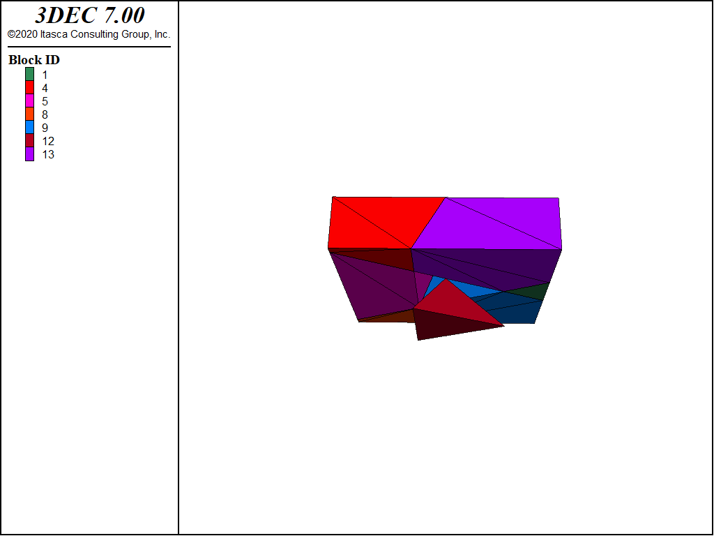
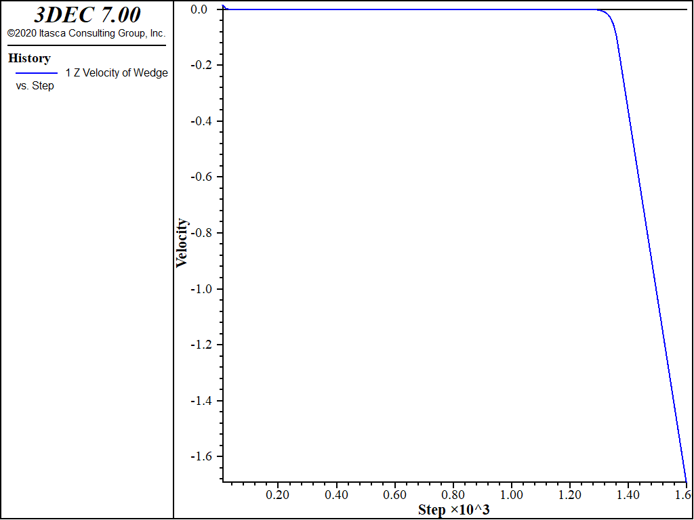

坠落楔体
问题描述
注意
要在 3DEC 中查看此项目，请使用菜单命令 。选择“3DEC/ VerificationProblems/ Falling_Wedge”，然后选择“fall.prj”进行加载。所用的主数据文件（main data files）显示在本示例的末尾。所有数据文件都可在该项目中找到。
分析开挖顶板中岩石楔体的稳定性。该问题考虑了地应力的稳定作用，并展示了节理刚度的影响。
顶板楔体由三个倾角为 60°、倾向分别为 30°、150° 和 270° 的节理形成。楔体高度为 1 m。地应力状态中，有两个主应力平行于开挖顶板（等于 −0.05 MPa）；竖向主应力为零。
解析解
Goodman 等（1982）推导了使开挖顶板楔体稳定的支护力的闭合解，由下式给出
其中：
\(n\) = 为块体上的面数；
\(_i\) = 表示块体面的索引；
\(A_0\) = 使楔体保持稳定所需的力；
\(W\) = 楔体的重量；
\(\sigma_{n,i}\) = 作用在楔体第 \(i\)个面上的法向应力；
\(A_i\) = 楔体面的面积；
\(\phi_i\) = 楔体面上的内摩擦角；
\(\alpha_i\) = 形成该面的节理倾角的余角；
\(k_{si}\) = 节理的剪切刚度；
\(k_{ni}\) = 节理的法向刚度；以及
\(i_i\) = 节理的粗糙度角。
对于这一特定情况，其中
- 所有节理的倾角相同，
- 与块体自由面平行的平面内的初始应力状态为静水应力状态，并且
- 所有节理的法向刚度与剪切刚度之比相同，
使楔体在无任何支护条件下保持稳定所需的摩擦系数（各节理相同）可由上式表示为：
临界摩擦系数（及内摩擦角）使用 FISH 函数 极限摩擦系数计算函数（f _limit） 计算，该函数列于数据文件“FALL.FIS”（data file “FALL.FIS”）中。（假定三个节理构成一个块体，且其倾向不互为 120°。）
3DEC 模型
图 1（Figure 1）所示的 3DEC 模型由七个刚性块体组成。其中六个块体被固定，只有孤立的楔体可在重力作用下运动。力学属性为：
密度：\(\rho\) = 2000 kg/m3
节理剪切与法向刚度：\(K_n\) = \(K_s\) = 10 MPa/m
重力加速度：\(g\) = 10 m/sec2
数值模拟首先固定楔体周围的所有块体，并施加地应力状态。然后将摩擦系数降低直至发生破坏。
结果与讨论
3DEC 模拟得到的摩擦角为 34.402°（楔体稳定所需的值），在五位有效数字内与临界摩擦角的解析解相同。楔体的破坏如图 1（Figure 1）所示。


图 1：坠落楔体模型。


图 2：楔体竖向速度的历史记录。
参考文献
Goodman, R. E., G.-H. Shi and W. Boyle. “Calculations of Support for Hard, Jointed Rock Using the Keyblock Principal,” in Issues in Rock Mechanics (Proceedings of the 23rd Symposium on Rock Mechanics, University of California, Berkeley, August 1982), pp. 883-898. New York: Society of Mining Engineers (1982).
数据文件
fall.dat
;===================================================
; 验证试验——下落楔体
; 节理黏聚力为零，摩擦角相等
;===================================================
model new
model large-strain on
program call 'fall.fis'
[_limit]
block create brick -2 2 -2 2 -1 1
block cut joint-set
block cut joint-set dip 60 dip-direction 30 ori 0 0 1
block cut joint-set dip 60 dip-direction 150 ori 0 0 1
block cut joint-set dip 60 dip-direction 270 ori 0 0 1
block delete range pos-z -1,0
block group 'wedge' range pos-x -0.2,0.2 pos-y -0.2,0.2 pos-z 0.0,0.3
;
block prop density=2e-3
; 这将创建子接触
block insitu stress -0.05 -0.05 0 0 0 0
block contact jmodel assign mohr
block contact property stiffness-normal 10 stiffness-shear 10 friction 89
block contact mat-table default prop stiffness-normal 10 ...
stiffness-shear 10 friction 34.4
model gravity 0 0 -10
block fix range position-x -2.0 2.0 position-y -2.0 2.0 position-z 0.3 1.0
block hide range group 'wedge' not
block hist vel-z pos -0.5774,-1,0
history name '1' label 'Z Velocity of Wedge'
block hide off
model cyc 400
; 将摩擦角设为 34.402
block contact prop fric=34.402
model cyc 800
model sav 'fall_stable'
; 将摩擦角设为 34.401
block contact prop fric=34.401
model cyc 400
[analytic]
model save 'fall'
program return
fall.fis
fish define params
global height_ = 1.0
global alpha_ = 60.0
global sigma_ = 0.05
global unitweight_ = 0.02
end
[params]
fish define _limit
alpha_ = (90.-alpha_)*math.degrad
local w_ = 0.5*math.sqrt(3)*height_^3* ...
math.tan(alpha_)* ...
math.tan(alpha_)*unitweight_
local a_ = 1.5*math.sqrt(3)*height_^2*math.tan(alpha_)/math.cos(alpha_)
local coef_ = (w_+sigma_*a_*math.sin(alpha_))
coef_ = coef_/(sigma_*a_*math.cos(alpha_)-w_*math.tan(alpha_))
global fang_ = math.atan(coef_)/math.degrad
end
;
fish define analytic
local status = io.out('Analytic solution = '+string(fang_))
end
;
| 这些内容对您有帮助吗？… 版权与免责声明 |
FLAC3D © 2019, Itasca | 原文更新于 2020 年 10 月 8 日 |